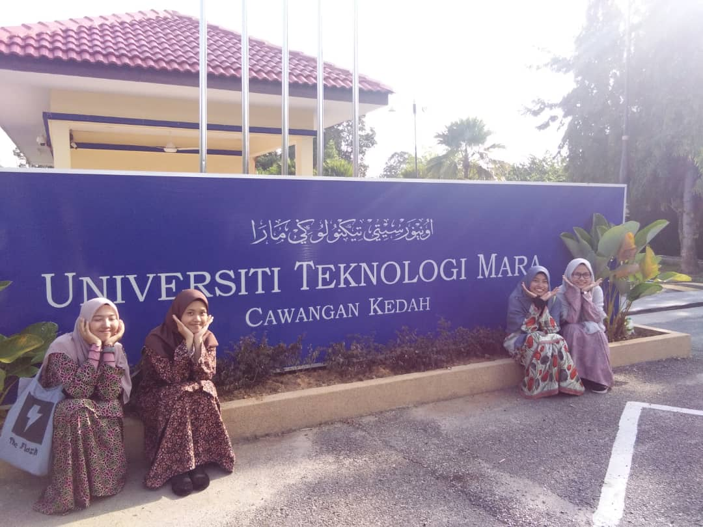
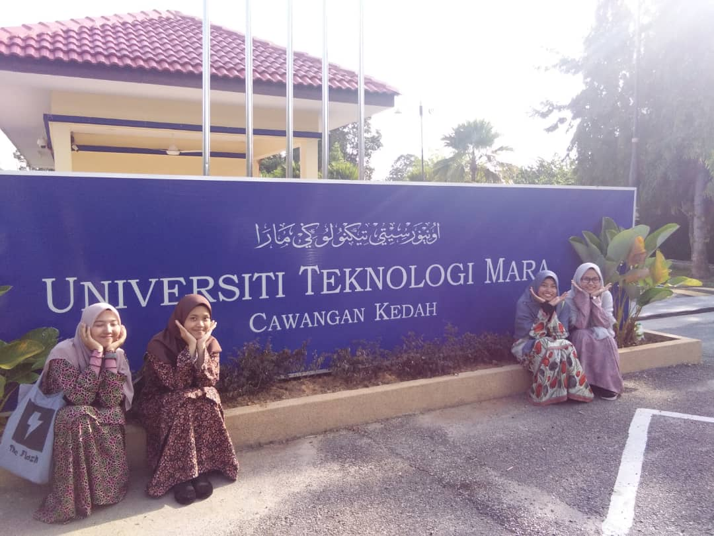

Education
Education
My education life start from I am 7 years old. At that time we live in Johor and my first primary school is Sekolah Kebangsaan Kampong Pasir (SKKP) and
Sekolah Agama Dato Omar Yusof Johor Bahru, Johor. For myself, I live in Johor for nine (9) years which is until I am 9 years old. What I have stated, 2010 we go to Selangor
and live there. From that, my second primary school is Sekolah Kebangsaan Meru (SK Meru) Jalan Tap, Kapar and Sekolah Rendah Agama Meru II, Meru Klang Selangor.
This site is not a diary but I want to say that I dont like to stay in Selangor for the first time. It is because I loved to stay in Johor, my hometown and I really
missed the environment and memories there. Now, its already 10 years and I am already 20 years old but i am still missed Johor Bahru.
In Sk Meru, I go to the same school with my brother. He is 11 years old and I am 10 years old. In my family, only us that are schooling there. It is something
that i will never forget which is the memories schooling together with my brother.After we finished the primary school, we separated which is my brother and I go to different school.
I've choose to go to the same school with my older sister. It is Sekolah Menengah Kebangsaan Perempuan Kapar (SMK(P)K). From the school name we know that it is a school that only for
female students. I've study there from I am 13 years old until 17. Along the years,my school life cycle at that time is only school-go back home-school. I have lack communication with male
people except my family members and teachers.
Primary School |
Year |
| Sekolah Kebangsaan Kampong Pasir, JB & Sekolah Agama Dato Omar |
3 years |
| Sekolah Kebangsaan Meru & Sekolah Rendah Agama Meru II |
3 years |
| Secondary School |
Year |
| Sekolah Menengah Kebangsaan Perempuan Kapar (SMKPK) |
5 Years |
This story is not end here. After I have finish my school life, I've continue study in local university in Malaysia which named
University of Technology Mara Kedah Branch. For the first time study at the university is not easy. It is normal for fresh student that still not adapt with university environment. For me, I am willing to study
here eventhough it will make me stay far from my family. It is one of my dream actually. My course field at the university is Library Management (IM120) under the Faculty of Information Management.
I got new friends and experience that not every people get. The "Library Management" course field is not as easy as what people expect.
It is normal when before we start to study this course we thing this course is simple. Like people said, just learn "how to arrange books on the bookshelf". But, after we go through of the subjects, it is not simple as people
say. I know every course field have their own difficulties same goes to library management. People never understand if they did not in the same shoes with that person. Thats the reality of life. However, I am very thankful
to God for giving us (my friends and I) a chance to continue our study and gain new knowledges and experience and we almost finished our diploma in the middle of this year (2020).
 
